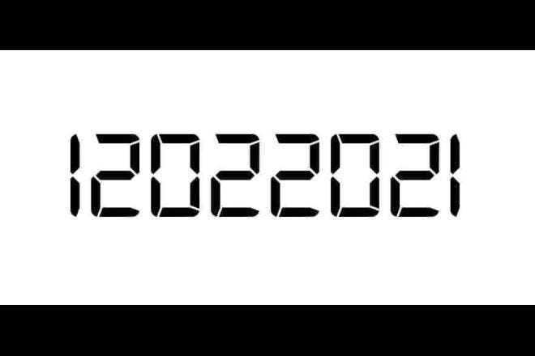

Nos últimos tempos, temos passados por grandíssimas dificuldades, contudo, nem tudo é lamentação.
Passamos por algumas datas especiais, por motivo da pandemia e maior actividade nas redes sociais, dificilmente essas datas passaram despercebidas, saiba abaixo sobre as datas palindromas e ambígramas.
Um palíndromo é uma palavra, frase ou qualquer outra sequência de unidades (como uma cadeia de ADN;
Enzima de restrição) que tenha a propriedade de poder ser lida tanto da direita para a esquerda como da esquerda para a direita. (fonte: Wikipedia)
Ex: 02/02/2020, 20/02/2002
Representação gráfica de uma ou mais palavras que podem ser lidas de diferentes pontos de vista ou orientações(fonte: dicionario.priberam)
Isto é, tanto de cima para baixo, como de baixo para cima, a data continua sendo graficamente igual.
Exemplo:
20/2020
Como se não bastasse, já recebemos uma data palindroma e ambigrama no ano de 2021

Essa é a data palindroma e Ambígrama do ano de 2021